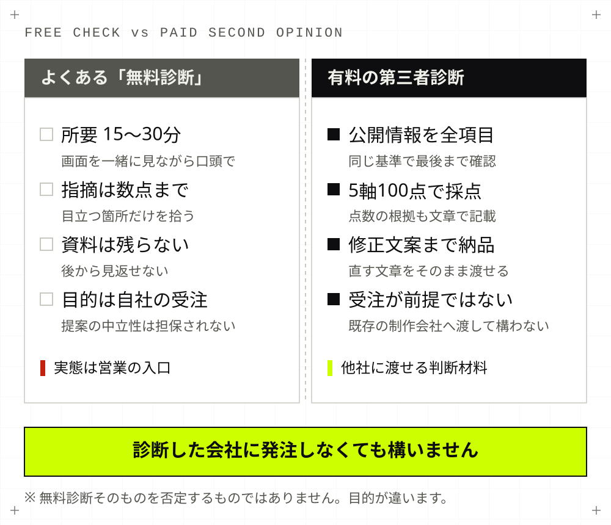
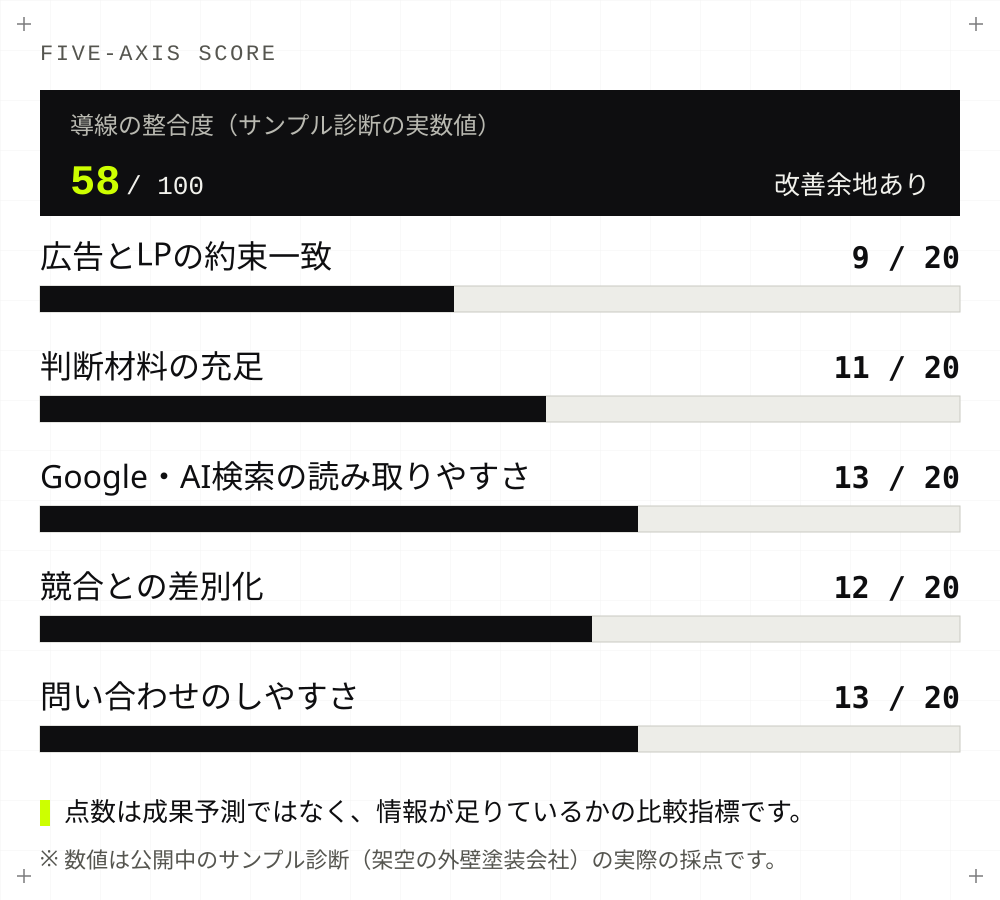
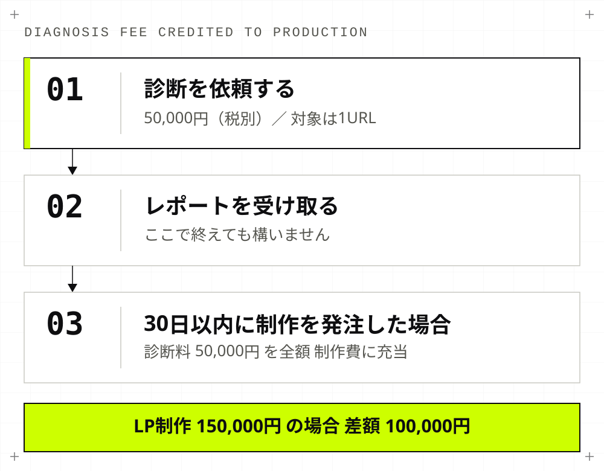

Second Opinion
制作会社に見せる前に読む、
第三者のセカンドオピニオン
「この提案は妥当なのか」「直すべきはデザインなのか、文章なのか」を、利害関係のない第三者が公開情報だけで確認します。業種は問いません。指摘だけでなく、直す文章そのものまで書いてお渡しします。

こんなときに使う診断です
制作会社と揉めるための診断ではありません。判断材料がないまま、次の見積書にハンコを押すことを避けるための診断です。
- 制作会社から改善提案が来たが、金額に見合う内容か判断できない
- 広告費を増やすべきか、その前にLPを直すべきか決められない
- アクセスはあるのに問い合わせが増えず、原因の見当がつかない
- 社内で「デザインが悪い」「文章が悪い」と意見が割れている
- 制作会社を変えるべきか、いまの会社に依頼を続けるか迷っている
無料診断との違い
無料診断を否定するものではありません。目的が違います。無料診断は提供する側の受注が目的なので、指摘の範囲と中立性がそこに規定されます。

何を見るのか — 5軸100点
感想ではなく、同じ基準で採点します。点数そのものより、なぜその点数なのかを文章で説明していることに意味があります。

| 点数 | 状態 |
|---|---|
| 0〜4 | 必要情報が確認できない |
| 5〜8 | 一部にあるが見つけにくい |
| 9〜12 | 確認できるが判断に不足 |
| 13〜16 | おおむね明確で一部補足が必要 |
| 17〜20 | 広告、LP、証拠、導線が一貫している |
納品するもの
実物を見ていただくのが早いと思います。納品レポートのサンプルを全文公開しています（架空の会社を題材にした見本です）。
| 項目 | 内容 |
|---|---|
| 経営判断 | 広告費を増やす前に何を直すべきか、結論から |
| 根拠付き採点 | 5軸100点と、各軸の点数の理由 |
| 検索意図 | その語で探している人が先に知りたい事実 |
| 広告とページの一致 | 広告の約束に対する答えが最初の画面にあるか |
| ファーストビュー文案 | そのまま差し替えられる見出しと本文 |
| 一次情報の充足 | 比較検討に使える情報が足りているか |
| 競合比較 | 公開情報での競合2〜3社との差 |
| 問い合わせ導線 | CTA文言とフォーム項目の具体的な修正案 |
| 改善10件 | 効果・工数・担当・完了条件で並べた一覧 |
| 上位3施策の仕様 | 既存の制作会社へそのまま渡せる粒度 |
| 30日計画 | 誰がいつ何を完成させるか |
| 計測設計 | 問い合わせ数だけでなく、止まった場所を測る設定 |
| 限界と引き継ぎ | 公開情報では分からなかったことを明記 |
最後の「限界と引き継ぎ」を必ず入れています。分からないことを、分かったように書かないためです。
料金と範囲
| 項目 | 内容 |
|---|---|
| 料金（税別） | 50,000円（対象は1URL） |
| 含まれるもの | 上記レポート一式、45分の納品説明1回 |
| 含まれないもの | 広告運用、広告アカウントの操作、サイトの改修作業、記事制作、社内データの分析、問い合わせ数・CPA・売上・検索順位・AI回答掲載の保証、法務判断 |
| 納期 | 入金と対象範囲の確定後 3〜5営業日 |
| お支払い | 銀行振込・原則全額前払い。消費税と振込手数料は別途 |
| 必要なもの | 診断してほしいURL。管理画面やアカウントの共有は不要です |
アカウント共有も月額契約も不要です。支払・キャンセル条件は特定商取引法に基づく表記に記載しています。
制作も依頼する場合
レポート納品から30日以内に制作をご発注いただいた場合、診断料50,000円を全額そのまま制作費に充当します。診断だけで終えていただいても構いません。

向いていない場合
先に書いておきます。次に当てはまる場合は、費用に見合いません。
- 公開ページがまだない（診断ではなく制作からになります）
- ECサイトの商品ページ最適化や、会員基盤を伴う大規模サイト
- 広告アカウントの中身を見ての運用改善を期待している（当社は運用代行をしません）
- 成果保証を求めている
- すでに社内に判断できる担当者がいて、根拠資料も揃っている
よくある質問
- いまの制作会社に知られずに依頼できますか。
- できます。診断は公開されている情報だけを見て行うため、制作会社への連絡や管理画面の共有は不要です。診断したことを相手に伝えるかどうかも、お客様の判断にお任せしています。
- レポートを、いまの制作会社にそのまま渡してもいいですか。
- 問題ありません。むしろそのために作っています。上位3施策は既存の制作会社がそのまま着手できる粒度で仕様を書いているため、当社へ発注する必要はありません。
- どんな業種でも対応できますか。
- 問い合わせ・予約・資料請求・応募など、Webから1つの行動につなげたいサイトであれば業種を問いません。ただしECサイトの商品ページ最適化や、会員基盤を伴う大規模サイトは対象外です。
- 点数が高ければ問い合わせが増えるということですか。
- いいえ。点数は成果予測ではなく、判断に必要な情報が公開ページ上でそろっているかを同じ基準で比較するための診断指標です。問い合わせ数や検索順位を保証するものではありません。